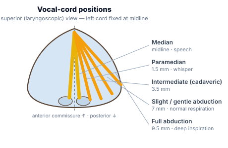
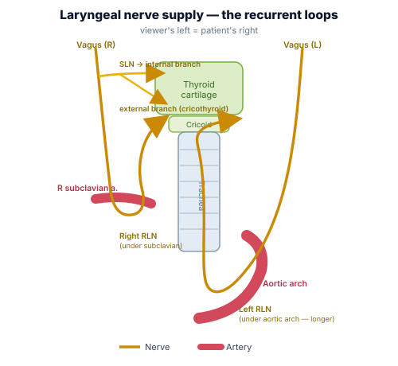
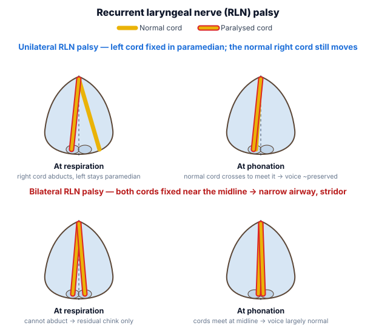
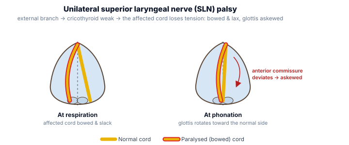

"Why the anaesthetist cares: the recurrent laryngeal nerve runs in the tracheo-oesophageal groove and is at risk in thyroid, parathyroid, oesophageal, carotid and anterior cervical-spine surgery. Bilateral recurrent laryngeal palsy is the airway emergency — the cords sit near the midline and cannot abduct, so extubation can be followed by stridor and complete obstruction."
Synthesised from Dhingra — Diseases of Ear, Nose & Throat; Scott-Brown's Otorhinolaryngology; Miller's Anesthesia. Diagrams are original CritCare.in artwork.The five vocal-cord positions
Cord position is described by the distance of the free (medial) edge from the midline. Both branches of the vagus control it: the recurrent laryngeal nerve (RLN) works every intrinsic muscle except one, and the external branch of the superior laryngeal nerve (SLN) works the cricothyroid (the cord tensor).

| Position | Distance from midline | Occurs normally during |
|---|---|---|
| Median | Midline (0) | Speech / phonation |
| Paramedian | 1.5 mm | Whisper |
| Intermediate (cadaveric) | 3.5 mm | — (no muscle tone) |
| Gentle / slight abduction | 7 mm | Normal quiet respiration |
| Full abduction | 9.5 mm | Deep inspiration |
The cadaveric (intermediate) position is the neutral position the cord adopts when it has no nerve supply at all (complete vagal / combined RLN + SLN palsy) — neither adducted nor abducted.
Nerve supply — and why the left RLN is longer

- SLN — internal branch: sensory to the larynx above the cords (afferent limb of the cough/laryngospasm reflex).
- SLN — external branch: motor to cricothyroid (tenses/lengthens the cord → raises pitch).
- RLN: motor to all other intrinsic muscles, including the only abductor — posterior cricoarytenoid ("the muscle of respiration"; PCA opens the cords). Sensory below the cords.
Recurrent laryngeal nerve (RLN) palsy

Suspect it if the patient develops stridor after extubation. Both cords cannot abduct, so the glottic chink is tiny. Be ready to re-intubate and involve ENT — definitive options include cordotomy, arytenoidectomy or vocal-cord lateralisation (type II thyroplasty).
Superior laryngeal nerve (SLN) palsy

Palsy comparison — position, voice, airway & management
| Type of palsy | Position of VC | Speech | Aspiration | Respiration | Management |
|---|---|---|---|---|---|
| U/L RLN | Mostly median, sometimes paramedian | Normal; sometimes mild hoarseness initially | None | Normal | Conservative (the palsy with the least consequences) |
| B/L RLN | Mostly median | Largely normal; sometimes mild hoarseness | None | Stridor & dyspnoea on exertion — the most life-threatening palsy | Usually one-sided VC lateralisation (cordectomy or type II thyroplasty) |
| U/L SLN | Normally moving, curved (bowed) VC | Weak voice, voice fatigue, loss of timbre, cannot raise pitch | Occasional | Normal | Conservative |
| B/L SLN | Normally moving VC, but both curved | Husky voice | Present | Normal | Tracheostomy and epiglottopexy (to prevent aspiration) |
| U/L complete | Cadaveric | Initial dysphonia/aphonia, subsequently hoarseness | Sometimes | Normal | Teflon/fat injection or medialisation of VC (type I thyroplasty) |
| B/L complete | Both VC cadaveric | Aphonia | Severe aspiration episodes | Normal | Tracheo-oesophageal diversion (gold standard) / epiglottopexy or VC plication with tracheostomy |
- Posterior cricoarytenoid is the only abductor — "the muscle of respiration". Lose it bilaterally and you lose the airway.
- Semon's law — in a progressive nerve lesion the abductor fibres fail before the adductors, so the cord drifts from paramedian toward the midline.
- Cadaveric = intermediate position = no nerve supply (complete/combined palsy), not isolated RLN palsy.
- Unilateral RLN = best voice/least danger. Bilateral RLN = good voice but worst airway. Bilateral complete = aphonia + severe aspiration.
- The left RLN is longer (loops under the aortic arch) → more often involved by mediastinal disease; hoarseness from a left-sided intrathoracic cause is Ortner's syndrome.